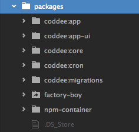

Coddee
Better code review
Presented on September 18 at Product Hunt Sydney
Structure
- Problem
- Demo
- Technology
- Learning
Problem
Code review is hard for both author and reviewers.
GitHub Workflow
Work on feature -> Open a PR -> Review/merge
(repeat)
Technology
Learnings
1. Always do progressive authorization
2. Different apps for different roles
3. Use front-end frameworks
if design is not your strength